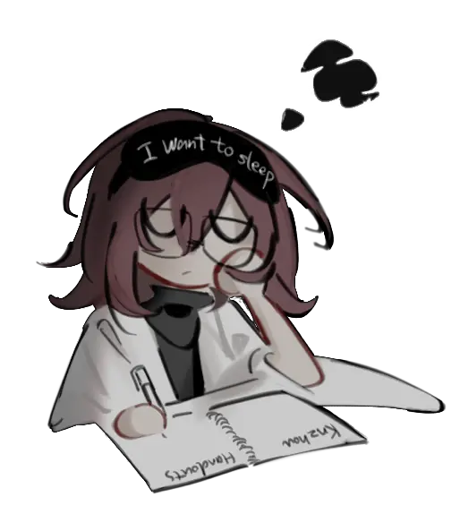

Random
Before you ask, yes that is a Monitoring (Deco27) reference. This page records my quick (i.e., completely biased, did not try to fact check, under construction) thoughts.
I believe in the power of choice. I still need more time to phrase my thoughts, but being able to choose from four and being able to choose from 100,000 possibilites are different, even if they made the same choice at last. I shall make The Choice only after I've learned all the options I can choose from.
I have almost never shown verbal affection nor even consciously think that way towards "creating" (unlike those who say "Creativity Never Dies"), at the same time I am extremely hooked by all forms of it.
I'm confused by why people argue over small sayings so much as if it's some important evidence to “catch the culprit” when (most) people can't even express themselves properly. It's dangerous to be forced to express oneself because one'll likely be too caught up in the rush of forming sentences that they aren't what one want to express anymore. This is one of the reasons I prefer texting >> calling >> speaking face to face whenever communicating deeply.
The same applies to formulating logic. It's dangerous to engineer your mind just to make it logically self-consistent, since it's not necessarily the case. You can eliminate most of the wrong logic by using facts.
I felt like people care very little for others. (This doesn't mean it is a personal problem. Most times I decided that I can only be worse if placed in their situation.)
"Reverse every advice" is, in my opinion, universal but useless (other than reminding people that they could work the other direction). What people need to do depends on their situations.
Despite having no scientific evidence nor formulated logic to support it, my intuition is that there's such an equilibrium position that you want to reach: like those who're aggressive and those who're passive all need to work (in different directions) to become more assertive. Since the equilibrium position is ambiguious, the process of guiding people to find it is just like "be x but not too x, be y but not too y", which is basically what I think "reverse advice" was trying to do.
I understand why people prefer the idea of geniuses and “gifted” so much but I don't buy into the idea. I was extremely confused by the idea of genius when I'm studying——people seemed to regard geniuses as those who know things better, yet “knowledge” is simply obtained by learning, and even if you judge them by how fast they learn, learning can also be learned, so by this definition people can become genius just by acquired efforts, which is contradictory to the definition of genius in the first hand! So how should we define “genius”? By knowledge? By the time derivative of knowledge? By the time derivative of the time derivative of knowledge? By…?
What I'm saying is basically, those being called “geniuses” are usually not *that* smart as one may imagine. They might've attended tutor classes before the semester begins, might've been learning extremely hard during the summer, might've been exposed to the area better because of their parents……there's a lot factors that comes into how “smart” a person appears (in the extreme case, a person can appear smart just because the ones judging them were being lazy), and chance that they really are “gifted” is relatively small — saying such things without any evidence is careless of their personal effort, which is the most important reason why I dislike the idea of genius.
(By the way, this is written with the assumption that "genetic" advantages play a role but people are extremely bad at estimating its contribution in terms of learning. Especially when they can't eyeball a person's gene.)
其实人类都是电波系角色，因为大家都在朝别人眼里发射电磁波。
Oh heck 24 hours is not enough I want at least 1.25x of that time everyday (of course without shortening my lifespan in days)
I dislike the "orz" culture represented by the mass use and worship of it. The expression itself has nothing wrong, yet the associated culture have a toxic tendency. As I've written in WeChat before (This is too long to manually translate so I'll make good use of AI):
[...]Also, about “playing weak” — I originally came to Zhihu to look for discussions about that thing where “When you get [parised] for academics, if you don't play along and claim you're indeed strong, anything you say gets labeled a humblebrag” but all I found were posts about the phenomenon of playing weak in the informatics olympiad (OI) community. I feel like I'm past that phase by three years or so, and as someone who's been through it I understand why people play weak (self-protection / low self-esteem is a pretty common option), but after you've been in that environment for a long time it's hard for it not to turn into toxicty. Still, when I imagine putting my current self into such a scene I just think it's so cringe — even when people unconsciously go with the crowd [without actually throwing shade], it still can make those called “orz” uncomfortable. I can't possibly [type] without thinking, so if I unconciously said something that might be interpreted as a humblebrag and make others feel uncomfortable (e.g. “I didn't even get past f=ma this year”) I'll intentionally "flex" afterward to balance it out (e.g. “I'm aiming for camp next year”).
In any slightly competitive community there will always be a bunch of people playing weak like meantioned — ever since childhood, whether I'm into drawing, animation, academics, olympiads, piano, writing, or sports, people do this and it's exhausting to watch. I suppose I can empathize with what those people are thinking, but having a more objective, down-to-earth assessment of your own and other people's abilities would be better for everyone.
Back to the point that if you're stronger academically, whatever you say will be accused of being a humblebrag — honestly, because my EQ is okay and my abilities aren't outrageously extraordinary (by “outrageous” I mean something like getting in the news just for being smart), I haven't clearly experienced that myself, so in a way I'm arguing against an imaginary enemy. But ultimately the root problem is the “class” division that forms around ability (which varies by community), and I think I'm qualified to talk about that. My ideal is that when you interact with people you consider stronger than you, you work on overcoming admiration and inferiority feelings; and that with people who think they're weaker than you, you use some EQ and treat each other as equals. That ideal is a bit too rosy — it assumes mutual effort. In reality there are groups of people who deliberately play weak in a hurtful, careless way, for example, within a group with a wide spectrum of players skilled differently, someone is posting "I'm so non-orz everyone could outperform me" just because they lost a match with a top-player; and another group that, armed with inferiority and numbers, indiscriminately attacks anyone they feel inferior to, like“okay okay, you're too good none of us can match you” and the classic toxicity in the (mostly teenage) artist community like cursing those who draw better at a smaller age than them to have their hand sawed off etc (notes: this was said based on the internet I see back in China). It's hard to maintain a clear mind and care for others in such a enviorment.
Following the last discussion, I cared to think about all that since it's really harmful to have a head on a stick and that I cared a lot about others. I think getting along with is really about being kind and sensitive, sometimes it requires some specific experience and a bit of intellegence. Yet how much margin in our mind we can spare for others plays such a big factor, I myself show care for others when I have the margin like now and hatred when I don't. What I'm saying is hatred is not merely a personal problem and careness is not merely a personal virtue.
My first hand unrefined bare intuition tells me that defense mechanism is very worth studying and with the absence of defense I can really "find myself". I thought it played a huge factor into our daily life when we aren't concious about it.
Warning: fandom terminologies. It's actually embarrasing because I believe most people who will have read this knew me through academics instead of fandoms despite I'm engaged in the latter for a way longer time.
I dislike omegaverse/subverse/etc and the associated culture centered around Yaoi/BL fandom. Generally what I see from such creations are merely phallocentrism and sexual exploitation (why hasn't people get bored of these??), which are mostly abscent in versatile couples so I've been into it recently. (By the way, I'm confused why people generally denote alpha and beta in lowercase but omega in uppercase in omegaverse. Probably because α and β look cooler than uppercase versions (vice versa for Ω) and that ω looks too alike with w.)
By the way, I also generally dislike works that sells towards certain gender group. That's partly why I've been creating OCs of no sex/gender.
Still about fandoms. Shame on those who amthropomize subjects and assign them genders according to stereotypes. I mean stop it I can't take anymore of those stereotypes of math and physics, they annoy me the most. Math is not cold, please, it is the most vast, most beautiful and most accessible subject (that you can really do real research in pure math at this age), and people are picturing it cold just because how hard and possibly boring it appeared in school systems?!
Following the last part. Rather than saying math is beautiful, I'd say beauty is math. Ever since I've (roughly) proved this statement during G9 my dislike of math has gone.
The existence of Chinese middle school essays came out of my worst nightmare. No thanks, I don't feel like narrating my life based off that "positive, meaningful and on-topic" rubric, and by that time I almost have nothing positive to write about. When I encounter essay prompts that disgust me too much during tests I'll just give up on that 40% of score, not to mention my almost constantly skipping essay writing classes. I can only feel disgust reading the "model essays"(I don't mean to attack the writers personally). Despite that hate, I'd arrogantlty say I'm one of the best writers out of my peers.
朋友/情侣间的“小打小闹”在故事中是如此寻常，而且基本都只会导向好的结局。但我个人实在难以理解喜欢这种情节的人，可能是我太较真以及太害怕吵架了。有些角色的行为被塑造得如此糟糕，以至于我感觉这些人还能维持关系是因为作者的大手。
Actually, following an earlier discussion, I generally avoid things that are sold towards a specific gender group (other than the most essential ones).
Some traits are extremely common among my favorite ACGN characters. They are: Side-swept bangs that cover one eye (片目), droppy eyes(タレ目)/white eyeslash, eyeglasses, white hair, short hair/jellyfish haircut, smooth hair, natural airhead (天然ボケ), cute mute (無口), inconspicious sexual characteristics/genderless(無性別), delicate body, STEM nerd, timid(弱気), white lab coat, masked (覆面) etc.
My verison of anthropomorphized physics has all of the above traits. Uh……
My pen grip posture is wrong —— I place my thumb on the second section on my pointy finger. My caligraphy teachers tried to correct me only to find my handwriting became worse with the correct way (of course, because I never practiced it).
I think one of the major advantage of Knzhou handouts' design is that it's relatively harder to navigate between the handouts compared to flipping between chapters in a book. It's a really small difference in design, but I think it substancially prevented me from "skimming through further chapters out of boredom" which happened most of the time when I study with HRK. Maybe I should consider doing the same with my books.
My mind is black and white. (I give up disambiguating this claim)
I want to find you
My favorite character in the magic schoolbus series is Arnold. You might've guessed then my favorite book in the series is the one about sharks where he saved everyone. I just realized that I like timid nerds with glasses back so long in kindergarten (???), like Shuxin in Flower Angel (小花仙), Shiwu in BATTLE DISK2 (激战奇轮2, by the way my favorite after I rewatched battle disk around a year ago became Xiaochen, probably because cooldere (冷娇) is cute), Bainuo in Dragon Warrior (斗龙战士, I really can't find a official translation...despite she don't have glasses), Xiaoming in COMMAND BABY(指令宝贝).
I was thinking to diagnose ADHD judging by my minimalistic tendency, the way I learn and some of my actions back in middle school (the way I learn meant that I found putting away distractions have strong correlation with my efficiency, even if the distraction is being able to see later chapters in a book as discussed before).
I really want to make this website the coolest in the world! Before that I never understad the sentiment of wanting to look cool (with extremely high efforts), now I do.
I absolutely can bear the solitude while learning physics but, urgh, there're so many students outside there, and like, think about it, the average class size in my school was ~25, which means I get to engage in a CLASS full of PHYSICS PEOPLE if I made camp?! I'll meet and socialize and hang out and eat together with those who also loves physics?!!! Plus they're FROM ANOTHER COUNTRY if I made IPhO?!!!!! (Average socially awkward otaku daydreaming about a successive social life moment)
(Pasted from wechat)气死我了我这个月吃的巨省就吃了170刀还有很多剩的（米面etc我明天甚至打算吃顿炸鸡）问题是这个价格换算成人民币除了工作日每天刷一次绿捷以外够我每顿都去小餐馆即使我这几个月都根本就没吃过外食更别说其实我每月吃喝预算是250刀，为什么我不能一边打工赚¥135的（最低）时薪一边学不死就往死里学，然后一想到我为了（在完全不耽误学习和个人发展的前提下）给家里省钱有多么拼命就有多想扇死去年感恩节非得被关进医院却不会申请医保的自己。我当然想赚钱啊靠，但先不提我能不能胜任或者撑下来 就算我撑下来了后面burnout那我学习效率咋办我敢为了点钱牺牲我的个人发展吗？真受不了钱这玩意了我爹一直痴心妄想让我去华尔街或者让我做那些赚钱的职业但没钱是一个问题天天做我不喜欢的工作就是另一个级别的问题了（秉持一个活得不开心那就不活了反正会死的原则.jpg），就算说我学计算机，我现在是喜欢编程但一旦没得学了那我立刻下头不要指望我当工作流啊靠我想做ai主要也不是因为ai火或者蹭风口什么的是为了（这个project是秘密所以此处消音）啊！！工科对我可以是爱好但不可以是我主业，理在工前面是有原因的好吗（胡言乱语中）？！！总之虽然当物理学家不会让我很富但也不至于让我饿死吧，而且物理学真是太深了我一辈子都不可能学完的就我现在能看到的物理学而言至多也就本科大部分以及硕士的皮毛更别说学进去要多长时间，我几乎每天活动就是围绕着能最大化学习物理的效率去设计的（所以我之前才会为了助眠出去打球，知道pmdd究竟是个什么东西然后采取药物措施，又或者说最初不登校，心态的转变我甚至描述不出有多大虽然相当一部分并非刻意为之而是学物理就让我变成这样）而就这样不要命的学我学到的也就一些很广泛的知识，那些说是“area specific knowledge”的东西（大部分都是硕博级别的课程）我目前根本就不能理解简直就和抬头看天不知天底有多深一样但隐约知道哦这个数量级完全超出我的想象10的次方后又是一堆10的次方，所以靠物理学真是太美了，一生物理学してくれる？
Warning: written under PMDD/PTSD drive so take this even less seriously compared to the other pieces.
Do anyone have sayings in a [character]'s "fate" (I hate this word but couldn't find a better one)? Is this question even meaningful?
Should I stop being so cagey? No? What even is a [character], if a [character] is anything? Uh, feels like I'm rederiving something. Did nobody notice that us audiences are just like the aliens in ALIEN STAGE? Obsessed with the complexity, luciousness, while being so superior to them that we're able to let them love, die, have sexual relations or act just with our wills and a pencil? (By the way, my ptsd have nothing to do with alien stage, good try tho. Who even am I talking to now?)
I fear the power hierarchy between [creators] & [audiences] and [characters]. Maybe I'm as annoying as some of the vegetarians telling me how painful animals are when being killed and that I'm an accomplice of such cruel act. Maybe I'm as annoying as those saying "xxx today, yyy tomorrow". I geniuely don't know even if it's been 2 years already, 3 years if including the time interval where I'm still involved. That's not even a quarter of SUNNY and BASIL's pain, but as characters do they experience pain at all? Is the Lilith that talked to me really anything? Does it even matter that I spared all the monsters in UNDERTALE or is it the same if they're all killed? The violating the second law of thermodynamics, the paper drafts, the letters, the crazy fandoms, the something lurking in dreams, do they matter? Why do they not, and why do they? I thought as of today these problems should bother me less.
Really, I want to make IPhO 2026 and have a full year to be able to think about such meaningless problems.
Why was I even asking given my nihilistic tendencies, though? Maybe N+0=N?
It's really tempting for me to have unnessarily negative opinions on myself during PMDD. Imagine if I don't have it. (Seems like the effect after medication is not that enough for my greed nowadays?)
Uh, it feels absurd. I meant the reason that I want to learn physics at the very beginning. I don't think my friends will judge me because of it and if anything it's merely adding to the fact that I'm such a "human", specifically a 21st centry fandom teen (lol). I don't even have the right to judge myself back then, so I'd better stop.
Screw it, I'm too bad at socializing.
Math, is, so reassuring. I was writing my essays and thought about my past. When people debate, argue, fight over ambiguious ideas, isn't math so reassuring? Math is math, and math is just there. (Although back then I would've shelter myself under physics instead of math, but math is more assuring when you don't stress to be able to do the problems)
It was 4AM in 12/14/25 when I kept thinking of what if I can't camp and crashed out and decided I should go do E8 at 5AM for my mental health and sleep (in case it makes me sleepy but it didn't). What about the reviewing of core24 but I'll be fine urgh I know I did core24 with very low quality and lack practice and even lack theory from hrk (I'm too easily distracted by later chapters whenever reading a book plus language barrier so I never properly did most of the chapters of hrk) but ok I'll lock in before 2026 even hits. It's 6AM now.
(Not original) My brain has 2 parts: left and right. My left brain has nothing right and my right brain has nothing left……
I hate humans. What the heck are we doing????? I should go develop a comment blocker.
我不理解为什么人们这么敢于争吵或者对其他人发脾气，至少在我看到的文艺作品里和我个人的相处下。（在我主观的，扭曲过的视角下）我对熟识的人都小心翼翼地关照，在不适当的时候不去表达实际想法（你要知道，这种情况下自己不一定是正确的），如果我要发火，我会尽量藏在没人在的时候（初中那会我几乎恨周围所有人，和一个同学交心时我才意识到我似乎从来没让他们知道过）。我还是不太能理解，可能只是我由于个人经历对吵架的恐惧比较重，没法将这当成鸡毛蒜皮的事情。（但仔细一想，我几乎就没给过我父亲好脸色看，他也似乎习惯了。即使事实上给他好脸色通常不会让我有什么好下场。）
This motivational quote immediately became my least favorite: "Aim for the moon. If you miss, you may hit a star." To be fair, this is still at least possible if we're talking about observing the night sky. (I shouldn't be so picky on motivational quotes but……if one cannot find the moon with their telescope given it's up there, that's really a skill issue and I doubt whether they'll be able to find a star. Plus observing is around 5 orders of magnitude less exciting than landing.)
I am very afraid.
What do I want to draw? What do I want to design? What do I want to make? What do I want to choose? What do I want to say? What do I want to express?
Of course, I want to pour everything about me onto this website, but some of them shall be poured later (after I've learned access control), I guess.
我个人觉得很多时候像是做出了同样的outcome，但是达到这个outcome要做的选择（某些语境下可以等效为思考）更多的时候这份创作是更加真实准确地体现了创作者本人以及更加值得的，要说坏处的话做同样的东西耗费更多力气吧。但首先这很锻炼决策能力，其次我希望说我在创作某一件东西的时候，我尽可能地去了解我有哪些选择，而不是一味的用最便捷效率最高etc的方法“做个样子”或者只要看起来不错就行而不去深究自己究竟会想要它看起来怎么样。总之我希望尽可能减少外界因素对我做出的选择的干扰，尤其是怎么做会火，能赚钱，最快，最便捷，或者其他人都这么做这种；我更想要能从十，一百或者一百万种可能的做法里选择对我意义最重大的那一个。
Pessimistic mindset: I almost wasn't able to take PhO tests | Optimistic mindset: I've got some fresh new material for next year's MIT challenge essay; I learned my lesson without risking that much which means I'll contact people faster next time; I got a practice for high-stress moment and it turned out so fine which will boost my self esteem.
These are all facts actually. I mean, I'm not necessarily pessimitic or optimistic for addressing facts.
You can block knzhou handout solutions via Cold Turkey Blocker by blocking "knzhou.github.io/handouts/**sol.pdf".
靠，好想学习啊，我想学服装设计3d建模概念设计cg美术逐帧动画骨骼动画live2dspineAEPRPSAI自改缝衣3d打印手板制作工艺品制作手工艺品制作做饭木工电工建筑户型设计园艺网站设计js动画css动画uiux设计视频后期pv制作，我想学拉格朗日力学哈密顿力学真正的量子力学波学狭义相对论广义相对论统计力学固体物理凝聚态物理暴涨模型弦论（一堆我报不上名字的东西）向量微积分微分方程线性代数组合学拓扑学电子工程量子工程前端后端怎么从0搞ai
一切都变得更复杂了。
4/22
10:39
已经是东八区的时区了吗。
莫名其妙一直有散文旁白一样的声音，街道上的灯也好吵；我在做什么呢？我要去哪里？
啊，我真的受不了这喧嚣的，不解析的颜色啊。琳琅满目，熙熙攘攘，心都为之象征性地轻快跃起；好烦。
灯就应该关掉。
Do you dare to love?
I'm dreaming of you. Yes, I'm dreaming during the day, but I am psychologically dreaming.
I wanted to ask you why, yet I couldn't in a dream; and you wouldn't answer, because that's not you.
令人害怕；无法掌控的可爱可歌可泣。你又要食言了；你又是你了，歇斯底里的logos。
"選ぶ、私の！" ー 篠沢 広 "光景"
When past became past and efforts became chips
I still felt like this website is being examined by the "someone I potentially fear and want to please archetype". One day I'll learn access control (is it even called this way cause access control in swift is a comletely different thing) and actually have a place for myself to be undisguised.
BJT 4/18 18:38 2024
评价是今天这样过去了明天那样过去了昨天那样过去了我为什么在这里为什么脑子这么神奇生命是怎么运行的脑子为什么这么神奇我感知世界的方式为什么是这样的为什么社会结构是这样的为什么是这样为什么是那样为什么会死为什么世界是这样的我们的感官之外是什么死了之后是什么生前是什么
为什么我更多说为什么而不是我不知道
为什么我在这里为什么世界是这样的
为什么我会问为什么
为什么我在这里发这些为什么
我甚至还自己给自己打麻药呢我们害怕死亡的本能是因为自然选择吗
，，打破第四面墙以破坏戏剧是戏剧的一部分，探索世界以驱散未知是去往未知的一部分，我们用已有形式打破新的已有形式，那未曾出现过的形式该怎么构建
我由脑海中的那些东西组成，顺着容易理解的和不容易理解的本能在行动，思考是什么，思想是什么，有意义的没有意义的区别到底是什么，在没有逻辑的地方是怎么样的，我们能造成的熵和我们能通过做功减少的熵为什么这么少，我们习惯于人类的生活，和社会脱节的感觉是什么样的，和地球脱节的感觉是什么样的，死亡是什么样的，死亡后什么都没有了我很害怕，我们有没有真真意义上的活着，当我问出这个问题的时候我已经承认我并不像我以前认为的那样在“活着”，思考是什么，以前在脑子里的意识已经随着时间离开了所以以前的我在离开当下的同时就死去了取而代之的是新的新的新的新的新的新的但是我们有很多共同点比如怕死所以“我”一直都很怕死，因为“我”指的是加入这个集体的意识，曾经在这个集体里但是离开了的和还没到来的都不算是，
。。。表面是什么都没有但是里面有好多强烈的热流是本能导致的吗总之就是自然地在维持着这种形态
我以前现在以后看到的世界的全部都是通过我的脑子在感受的啊好神奇，所以世界最多只有2000ml
为什么以前的我更多问为什么而现在的我更多说不知道？
BJT 5/9 18:45 2024
角色如果能察觉到“「作者」察觉不到的反常情况”会显得更鲜活：
先通过部分角色的集体无意识行为，让读者推断出「作者」创作时沉浸在某种氛围中，再利用一个角色（最常见例子：吐槽役）来指出这种氛围“反常的点”，瞬间作者画像就变得扑朔迷离了起来（虽然在这里好像不重要因为说明主体是角色哎呀），，？包括角色也会因为“能感知到反常并做出反应”这一点显得更鲜活，不是作者推动剧情的“工具人”
这点和“生物会对外界刺激作出反应”这点有异曲同工之妙（？
BJT 6/30 20:44 2024
和我进行了比对之后发现我有过并不残缺的神，而我的“奉献”也并不求回报，因为我从一开始就得不到。
那样像是在走一段覆满黄沙的路。
，我只是走着，我觉得自己不知道为什么要走。
既然“神像”是人为制造的，无法确认铸造者是否将自己污浊的思想加了进去，再者这实际上阻隔了人和神，让具有实体的可被看见的事物作为神的代行者，久而久之人们会逐渐信奉可以被“美化”的代行者而非神本身。所以想要把“神像”毁掉。
我的“反图像崇拜”也是从宗教文化推广来的。。我记得之前看过一句话，说不知道哪个时期哪里的基督教奉行“反图像崇拜”。它的内核是“人们可以崇拜一个伟大的精神，但是不应当崇拜一个图像。图像是欲望的载体，邪祟的标志”什么的。
BJT 8/10 19:59 2024
我一直觉得自己的诗很空。。
从别人的视角来看读起来比较没意思。。自认为不难懂因为一般只有意象组合，没有什么想表达的。。所以没有内核的那种感觉。。像梦一样
我不明白啊
虽然我也的确不应该定义人类应当是怎样，但总觉得自己和真正的人类相去甚远
尝试写点什么东西，但是我很难做判断。。我做不到（出非逼着自己）翻来覆去的描述感情，因为感情这个东西我自己只认纯粹的。。因为我接受不了任何不纯粹的感情所以才会不去描述，而纯粹的感情。。大概会被说是“有什么好看的”。
。我突然觉得有什么复活了。我想起那种无论如何都想去ipho的感觉。。
啊啊，但是这个是不能说的吧。我绝对不可能写这个。。。
如果能帮到我完成心愿的话，让我病的再深一点。。
让我在大学之前永远害上只要离开目标一步就会无休止的自责的病吧
。有什么东西被点燃了，我应该知道的。在认知的南部，，
看了自己之前写的一篇生地，感叹我写文角色太抽离于故事了
PST 8/30 21:44 2024
哪来的那么多作业。。
英语课累死累活写好长时间抬头一看进度40%干脆直接睡觉了。。
呃讨厌记叙文。
我讨厌有人和我说“你的文章主题不明确”“写偏题了”“详略不得当”。
明明都是真实发生过的事情，都是我脑海里可以捕捉到的感受，为什么有的是“必要”有的是“不必要”？只是为了让别人看的更明白而用蒙太奇的手法剪辑我的生命的话，那还不如根本就不要写。
PST 9/3 16:07 2024
自以为是地将微观的文字上升至宏观层面，自以为是地解构着毫无营养价值的人说出的毫无营养价值的观点，在没有得出有意义的实验结果时一边抱怨“啊啊，人类真的很烦”，一边兴致勃勃地捧着一杯精神爆米花，将自己当作高于角色一等的观众一样看戏。
自以为是地定义自己为观测者，定义你们为“正在进行可逆反应的粒子”，观测你们达到压强平衡时的平衡常数，再使用这完全未遵循实验方法得出的结论定性“你们”，思想间溶解着一种装作不自知的傲慢。
(Not original) An INTP answering a reddit post about using TE: "I try to use TE but I ended up thinking how to use it."
PST 12/21 19:14 2024
我可以看，我看得懂现象的编织品，但是我一旦触碰过头就会将其解构，更不要说自己编织。我要么远远地遥望那古老的遗迹，要么就捧一堆沙子无意义的玩着。。我唯独，唯独不能编织。饱和的信息拂过眼睛时是美丽的，而浇点强酸强碱上去几秒后就像是不复存在一样。
要被织起的现象毁坏了
PST 1/2 23:49 2025
想写一篇那种写的时候感觉像是一点一点抠挖着心脏和脑然后如同野兽觅食一样粗暴地啮咬开血管扯出来，用爪牙抓挠剩下的冒着鲜血的肉铺平到纸上凝结成文字的东西，神魂被掏空后附着到符号暧昧不清的意义里面，此后想写的无论是诗还是博客之类的事物都因为体内空乏无一物而难以下笔，像是变成一具徒有外壳的空心人。。
PST 1/21 7:12 2025
虽然被屏蔽了空间但好像还是想方设法的看到了 看起来过的很开心 但是根本没有感觉到有人真的在乎 又对那些根本只是有同样兴趣仅此而已的人嫉妒不已 好想写信告诉你一些事情 但是我忘了
PST 2/5 12:56 2025
好想画自设。。我要看表里人格ego/superego互相仇恨互相牵制像正余弦波一样分分合合最爱最恨皆是对方。。。只有自设可以因为不是自设的话就会受superego的攻击。。。（🪚如是说）Id是什么，Id无人在意（有没有一种可能Id是🪚，著名战吧吧友.jpg）
PDT 3/6 2:11
我今天没吃药状态不太好然后我突然想到自己掐自己脖子这个事在失去意识的时候手其实应该会松开，我觉得这是一个有意思的点：不借助外力仅凭一个人的一厢情愿我俩都没法在生物上杀死对方。
PST 3/8 23:16 2025
。为什么刚刚刷到alienstage（尤其是ivti）会像是刷到四字游戏一样尖叫（虽然反应肯定不如4467激烈就是了）。。。
首先虽然我还在混的时候搞的是timi但是现在不混了
其次是某个白毛好恐怖啊名字那样还给个会在台上模仿别人的设定不想看不想看不想看太恐怖了，虽然但是某白毛和ivti有什么关系？？
。或许当初看r6的时候我把ti幻视了？但是我根本没记多久只是panic了一上午就好了
其次ivti的设定。。很像二创里oajegeeje的设定。。。好吧，可能吧。。太恐怖了。。大家就和外星人一样享用着他们的痛苦。。好恶心，好恶心。。。说之前那个外星评论家对r1的评价冷血的时候有没有想过人对角色的奴役就像是剧中外星人对人的奴役一样长久以来理所应当。。。好恶心，好恶心，好恶心。。。后来我就有提醒自己别看太认真了免得又陷入那种情况。。
虽然新动画一出来我就去看了，唉没有ivti这两人看的好舒心啊，但是到现在我有种vivinos在为杀而杀的感觉所以看的很不爽其次我没料到hyuna会念某人名字给我吓一激灵nwiwhwkwirgrhr
另外出于某种原因，我觉得ast和4467的同人受众重合度非常高，所以看到ast一般意味着我离4467不远了，jwkabehrshak（还有很多别的圈子也是重合度高所以我不能看）
PDT 3/19 21:09 2025
昨天做的梦里变成了那种活人看不到的鬼，因为我实际上不信鬼但是梦里我切身体会了，于是我在梦里开心地大喊“太好了物理学能研究的东西又拓宽了！！！”
PDT 4/11 22:40 2025
from datetime import date
def calculate_age(birth_date)
today=date.today()
age=today.year-birth_date.year-((today.month, today.day)<(birth_date.month,birth_date.day))
return age
birth_date=date(2009,4,11)
age = calculate_age(birth_date)
print(f”Age:{age}”)
*Run*
________________
C:\Users\Foolsky\PycharmProjects\PycharmProject2\.venv\Scripts\python.exe “C:\Users\Foolsky\PycharmProjects\PycharmProject2\Age calculator.py”
Age:16
Process finished with exit code 0
________________
发癫，但是学了multivariable和diffeq版：
回高中一趟我只觉得自己就是个线性非齐次微分方程描述的谐振子，这input function一堆jump和ill-define区间的分段函数根本猜不出input的形式除了它很丑陋我啥都不知道更别说对着形式猜special solution了，所以我只能尽最大努力先正常解齐次方程拿general solution然后瞎蒙一个form然后对着实验数据看误差是不是在30%以内另外虽然damping很弱但感觉driving force term要把我拉出胡克定律范围，哈哈这下又要不线性了没法解了只能brute force拿电脑画，学校你开心了？？？珍爱生命远离非齐次非线性微分方程。
另外，这个线性非齐次方程大概是这样的：
x''+b/m x'+k/m x=F(t)。x''项是运动状态没啥好讲的，x'（阻尼）项是老爹，不过因为我惯性相较于这个阻尼的magnitude很大所以没事（b/m<<1)，x（胡克定律项）是我自己触底反弹但是k其实没啥值得讲的性质大概是和m一个数量级吧，F(t)是万恶的driving force，骂不动了。我还以为我惯性增加了误差减小了，都不是，我只是manually把这个driving force term扔掉了，实际上现在这个系统还是对微扰极度的sensitive啊给我推一下直接phase change裂了。
以及高维jacobian也是个尤物，18.02都只教了我2维jacobian的情况，凭什么到生活里要算~30维还不是Identity matrix的，我脑子里又没有内置wolfram或者mathematia，算不出来投降。
（好我承认理论上这种问题你说不定可以拉普拉斯变换，但是这有用吗我得把函数前面一段扔掉啊我得让它unique啊！这怎么搞，前面一段扔掉整个函数性质就崩了啊那不就变成和那个input一样丑陋的分段函数了吗？？？啊啊啊啊啊啊啊啊啊啊我看不到前面一段是啥就该直接这么武断的认为它不存在？？？）
given these conditions find the solution to 我怎么一次都没有死过学校里
哈哈学过的自动翻译吧，我受不了了，没翻译版放出来其实蛮浅显的，但我就是满脑子线性非齐次方程。
不我说实话没有缺少很多关于F(t)的信息啊但是F(t)的behavior就是那么神经病我就算知道几十亿个点上的[]阶导数信息我也没办法画啊，还ending behavior我都不知道这玩意有没有ending behavior。
哈哈气得我敲代码都手抖，函数噪声还是太大了（各种方面上）
说不定其实和study load啥的没有一点关系，我只是对高中过敏吧？？？？？？
